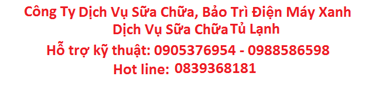

- Tủ lạnh là thiết bị điện lạnh được sử dụng hàng ngày tại mỗi gia đình. Tủ lạnh giúp bảo quản thức ăn tốt hơn, tránh thức ăn bị thạch sùng, ruồi, muỗi chuột… xâm phạm trong quá trình bảo quản. Từ những nhu cầu hết sức gần gũi đó, tủ lạnh đã gắn bó với mỗi gia đình như một thiết bị điện lạnh không thể thiếu.
- Sau một thời gian sử dụng, tủ lạnh dần xuống cấp và đây là lúc bạn cần bảo dưỡng tủ lạnh. Một số tủ lạnh bị dò gỉ ga đã không còn khả năng làm lạnh mặc dù điện vẫn vào, block tủ lạnh vẫn chạy dẫn đến thức ăn bên trong nhanh bị hỏng hơn và có mùi hôi khó chịu. Và đây là lúc bạn cần trung tâm sửa chữa tủ lạnh nhất.
Dấu hiệu cần gọi thợ sửa tủ lạnh ngay:
- Tủ lạnh yếu lạnh
- Tủ lạnh bị tắt âm
- Dàn nóng chỉ hơi nóng
- Tủ lạnh phát ra tiếng ồn lớn
- Có tiếng gõ nhẹ bên trong block
- Cửa tủ bị chênh hay vỏ tủ không kín
- Đèn sáng nhưng tủ lạnh không chạy
- Hệ thống lạnh không hoạt động đúng
- Có hiện tượng đọng sương bên ngoài
- Sê vỏ tủ thấy lạnh, trên vỏ tủ có hiện tượng đọng sương
- Nếu để lâu đá có thể bám ra phía ngoài vỏ nhựa của ngăn đá
CÁC BỆNH TỦ LẠNH THƯỜNG GẶP
Tủ lạnh hoàn toàn không lạnh:
A. Đèn trong tủ không sáng, máy nén không chạy: cầu chì đứt, rắc cắm
hỏng hoặc không tiếp xúc tốt, dây điện đứt.
B. Đèn trong tủ sáng, máy nén chạy: hết gas, pin lọc ống mao bị nghẹt, máy nén bị hư phần cơ.
C. Đèn trong tủ sáng, máy nén không chạy: máy nén cháy cuộn dây, relay khởi động relay bảo vệ quá tải, tụ khởi động yếu hư, time hư hay đang trong chế độ xả đá.
D. Đèn trong tủ sáng, máy nén lúc chạy lúc dừng: điện áp không ổn định, cuộn dây máy nén bị chạm.

2 Tủ lạnh kém lạnh:
A. Tủ bị sử dụng trong điều kiện quá tải: núm điều khiển nhiệt độ quá lớn. đóng và mở cửa không kín hoặc mỏ đóng quá nhiều, của thoát gió bị chặn do thực phẩm, đặt tủ nơi có nhiệt độ cao.
B. Tủ đá sử dụng lâu năm: gas lão hoá( dàn lạnh đóng tuyết không đều), đèn sáng khi đóng cửa, quạt chạy yếu hoặc không chạy, hư themosta, time hư, điện trở xả đá hư, ống mao chạm dàn nóng, máy nén kẹt cơ, nghẹt ống mao.
C. Ngăn mát vẫn lạnh nhưng ngăn đông không lạnh( loại làm lạnh trực tiếp): thiếu gas, máy nén yếu bơm.
D. Ngăn đông làm lạnh tốt nhưng ngăn mát không lạnh(tủ quạt gió): của thoát gió bị ngẹt, hư time, so lạnh, điện trở xả đá, themosta ngăn mát hư,ống thoát nước bị nghẹt.

3 Tủ lạnh quá mức:
A. Máy nén hoạt động liên tục do thesmota điều chỉnh quá lớn hay hư nên không ngắt máy nén khi đủ độ.
B. Ngăn mát đông đá do thesmota điều chỉnh quá lớn hay hư nên không ngắt máy nén khi đủ độ.
C. Tủ không xả đá: dàn lạnh đóng tuyết quá nhiều: hư time, hư điện trở xả đá, hư sò lạnh, hư sò nóng.
- Báo giá trước cho quý khách hàng
- Với đội ngũ kỹ thuật viên giỏi luôn kiểm tra , tận tình phục vụ nhanh.
- Làm việc 24/7 (Phục vụ cả Thứ Bảy – Chủ Nhật – Ngày Lễ)
Quý khách cần tìm trung tâm sửa tủ lạnh tại nhà:
Chỉ cần gọi: Trung Tâm Dịch Vụ Điện Máy Xanh sửa chữa tủ lạnh tại nhà:
- Hotline: 03.752.915.71
- Kỹ thuật tư vấn sửa chữa tủ lạnh: 090.537.6954 - 098.858.6598